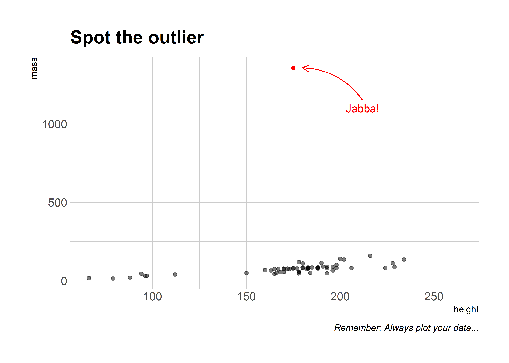
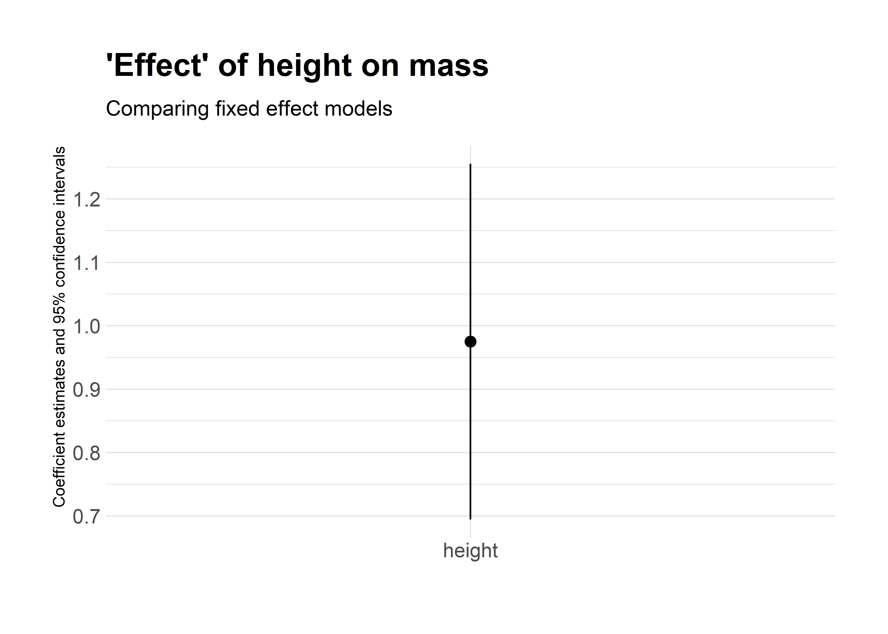
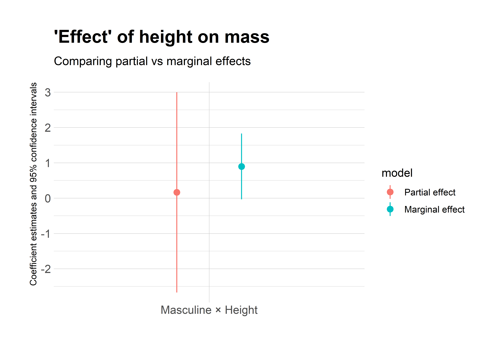
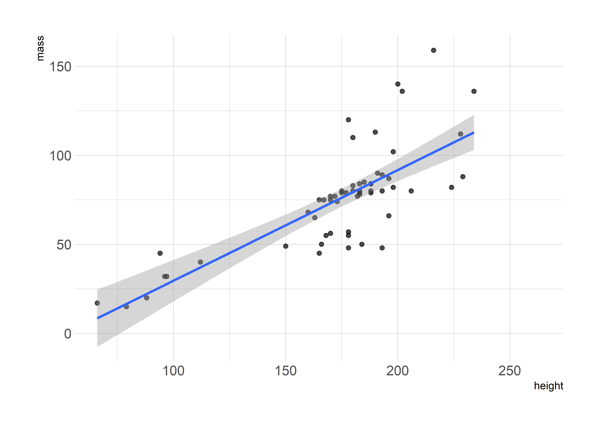

8 Regressionsmodelle: Erweiterungen
Das Ziel dieses Kapitels ist ein grober Überblick zu Tricks und Anwendungen für angewandte Regressionsanalysen
8.1 Software requirements
8.1.1 R packages
It’s important to note that “base” R already provides all of the tools we need for basic regression analysis. However, we’ll be using several additional packages today, because they will make our lives easier and offer increased power for some more sophisticated analyses.
{tidyverse} - New: fixest, estimatr, sandwich, lmtest, marginaleffects, broom, modelsummary, vtable
Die folgenden Beispiele basieren vornehmlich auf dem starwars-Datensatz aus {dplyr}, hier ein kurzer Blick in die Daten:
starwars# A tibble: 87 × 14
name height mass hair_…¹ skin_…² eye_c…³ birth…⁴ sex gender homew…⁵
<chr> <int> <dbl> <chr> <chr> <chr> <dbl> <chr> <chr> <chr>
1 Luke Skywa… 172 77 blond fair blue 19 male mascu… Tatooi…
2 C-3PO 167 75 <NA> gold yellow 112 none mascu… Tatooi…
3 R2-D2 96 32 <NA> white,… red 33 none mascu… Naboo
4 Darth Vader 202 136 none white yellow 41.9 male mascu… Tatooi…
5 Leia Organa 150 49 brown light brown 19 fema… femin… Aldera…
6 Owen Lars 178 120 brown,… light blue 52 male mascu… Tatooi…
7 Beru White… 165 75 brown light blue 47 fema… femin… Tatooi…
8 R5-D4 97 32 <NA> white,… red NA none mascu… Tatooi…
9 Biggs Dark… 183 84 black light brown 24 male mascu… Tatooi…
10 Obi-Wan Ke… 182 77 auburn… fair blue-g… 57 male mascu… Stewjon
# … with 77 more rows, 4 more variables: species <chr>, films <list>,
# vehicles <list>, starships <list>, and abbreviated variable names
# ¹hair_color, ²skin_color, ³eye_color, ⁴birth_year, ⁵homeworld8.2 Regression basics
8.2.1 The lm() function
R’s workhorse command for running regression models is the built-in lm() function. The “lm” stands for “linear models” and the syntax is very intuitive.
lm(y ~ x1 + x2 + x3 + ..., data = df)You’ll note that the lm() call includes a reference to the data source (in this case, a hypothetical data frame called df). We covered this in our earlier lecture on R language basics and object-orientated programming, but the reason is that many objects (e.g. data frames) can exist in your R environment at the same time. So we need to be specific about where our regression variables are coming from — even if df is the only data frame in our global environment at the time.
Let’s run a simple bivariate regression of mass on height using our dataset of starwars characters.
ols1 = lm(mass ~ height, data = starwars)
ols1
Call:
lm(formula = mass ~ height, data = starwars)
Coefficients:
(Intercept) height
-13.8103 0.6386 The resulting object is pretty terse, but that’s only because it buries most of its valuable information — of which there is a lot — within its internal list structure. If you’re in RStudio, you can inspect this structure by typing View(ols1) or simply clicking on the “ols1” object in your environment pane. Doing so will prompt an interactive panel to pop up for you to play around with. That approach won’t work for this knitted R Markdown document, however, so I’ll use the listviewer::jsonedit() function that we saw in the previous lecture instead.
# View(ols1) ## Run this instead if you're in a live session
listviewer::jsonedit(ols1, mode="view") ## Better for R MarkdownAs we can see, this ols1 object has a bunch of important slots… containing everything from the regression coefficients, to vectors of the residuals and fitted (i.e. predicted) values, to the rank of the design matrix, to the input data, etc. etc. To summarise the key pieces of information, we can use the — wait for it — generic summary() function. This will look pretty similar to the default regression output from Stata that many of you will be used to.
summary(ols1)
Call:
lm(formula = mass ~ height, data = starwars)
Residuals:
Min 1Q Median 3Q Max
-61.43 -30.03 -21.13 -17.73 1260.06
Coefficients:
Estimate Std. Error t value Pr(>|t|)
(Intercept) -13.8103 111.1545 -0.124 0.902
height 0.6386 0.6261 1.020 0.312
Residual standard error: 169.4 on 57 degrees of freedom
(28 Beobachtungen als fehlend gelöscht)
Multiple R-squared: 0.01792, Adjusted R-squared: 0.0006956
F-statistic: 1.04 on 1 and 57 DF, p-value: 0.312We can then dig down further by extracting a summary of the regression coefficients:
summary(ols1)$coefficients Estimate Std. Error t value Pr(>|t|)
(Intercept) -13.810314 111.1545260 -0.1242443 0.9015590
height 0.638571 0.6260583 1.0199865 0.31204478.2.2 Get “tidy” regression coefficients with the broom package
While it’s easy to extract regression coefficients via the summary() function, in practice I always use the broom package (link) to do so. broom has a bunch of neat features to convert regression (and other statistical) objects into “tidy” data frames. This is especially useful because regression output is so often used as an input to something else, e.g. a plot of coefficients or marginal effects. Here, I’ll use broom::tidy(..., conf.int = TRUE) to coerce the ols1 regression object into a tidy data frame of coefficient values and key statistics.
# library(broom) ## Already loaded
tidy(ols1, conf.int = TRUE)# A tibble: 2 × 7
term estimate std.error statistic p.value conf.low conf.high
<chr> <dbl> <dbl> <dbl> <dbl> <dbl> <dbl>
1 (Intercept) -13.8 111. -0.124 0.902 -236. 209.
2 height 0.639 0.626 1.02 0.312 -0.615 1.89Again, I could now pipe this tidied coefficients data frame to a ggplot2 call, using saying geom_pointrange() to plot the error bars. Feel free to practice doing this yourself now, but we’ll get to some explicit examples further below.
broom has a couple of other useful functions too. For example, broom::glance() summarises the model “meta” data (R2, AIC, etc.) in a data frame.
glance(ols1)# A tibble: 1 × 12
r.squ…¹ adj.r…² sigma stati…³ p.value df logLik AIC BIC devia…⁴ df.re…⁵
<dbl> <dbl> <dbl> <dbl> <dbl> <dbl> <dbl> <dbl> <dbl> <dbl> <int>
1 0.0179 6.96e-4 169. 1.04 0.312 1 -386. 777. 783. 1.64e6 57
# … with 1 more variable: nobs <int>, and abbreviated variable names
# ¹r.squared, ²adj.r.squared, ³statistic, ⁴deviance, ⁵df.residualBy the way, if you’re wondering how to export regression results to other formats (e.g. LaTeX tables), don’t worry: We’ll get to that at the end of the lecture.
8.2.3 Regressing on subsetted data
Our simple model isn’t particularly good; the R2 is only 0.018. Different species and homeworlds aside, we may have an extreme outlier in our midst…

Maybe we should exclude Jabba from our regression? You can do this in two ways: 1) Create a new data frame and then regress, or 2) Subset the original data frame directly in the lm() call.
8.2.3.1 1) Create a new data frame
Recall that we can keep multiple objects in memory in R. So we can easily create a new data frame that excludes Jabba using, say, dplyr (lecture) or data.table (lecture). For these lecture notes, I’ll stick with dplyr commands since that’s where our starwars dataset is coming from. But it would be trivial to switch to data.table if you prefer.
starwars2 =
starwars %>%
filter(name != "Jabba Desilijic Tiure")
# filter(!(grepl("Jabba", name))) ## Regular expressions also work
ols2 = lm(mass ~ height, data = starwars2)
summary(ols2)
Call:
lm(formula = mass ~ height, data = starwars2)
Residuals:
Min 1Q Median 3Q Max
-39.382 -8.212 0.211 3.846 57.327
Coefficients:
Estimate Std. Error t value Pr(>|t|)
(Intercept) -32.54076 12.56053 -2.591 0.0122 *
height 0.62136 0.07073 8.785 4.02e-12 ***
---
Signif. codes: 0 '***' 0.001 '**' 0.01 '*' 0.05 '.' 0.1 ' ' 1
Residual standard error: 19.14 on 56 degrees of freedom
(28 Beobachtungen als fehlend gelöscht)
Multiple R-squared: 0.5795, Adjusted R-squared: 0.572
F-statistic: 77.18 on 1 and 56 DF, p-value: 4.018e-128.2.3.2 2) Subset directly in the lm() call
Running a regression directly on a subsetted data frame is equally easy.
ols2a = lm(mass ~ height, data = starwars %>% filter(!(grepl("Jabba", name))))
summary(ols2a)
Call:
lm(formula = mass ~ height, data = starwars %>% filter(!(grepl("Jabba",
name))))
Residuals:
Min 1Q Median 3Q Max
-39.382 -8.212 0.211 3.846 57.327
Coefficients:
Estimate Std. Error t value Pr(>|t|)
(Intercept) -32.54076 12.56053 -2.591 0.0122 *
height 0.62136 0.07073 8.785 4.02e-12 ***
---
Signif. codes: 0 '***' 0.001 '**' 0.01 '*' 0.05 '.' 0.1 ' ' 1
Residual standard error: 19.14 on 56 degrees of freedom
(28 Beobachtungen als fehlend gelöscht)
Multiple R-squared: 0.5795, Adjusted R-squared: 0.572
F-statistic: 77.18 on 1 and 56 DF, p-value: 4.018e-12The overall model fit is much improved by the exclusion of this outlier, with R2 increasing to 0.58. Still, we should be cautious about throwing out data. Another approach is to handle or account for outliers with statistical methods. Which provides a nice segue to nonstandard errors.
8.3 Nonstandard errors
Dealing with statistical irregularities (heteroskedasticity, clustering, etc.) is a fact of life for empirical researchers. However, it says something about the economics profession that a random stranger could walk uninvited into a live seminar and ask, “How did you cluster your standard errors?”, and it would likely draw approving nods from audience members.
The good news is that there are lots of ways to get nonstandard errors in R. For many years, these have been based on the excellent sandwich package (link). However, here I’ll demonstrate using the estimatr package (link), which is both fast and provides convenient aliases for the standard regression functions. Some examples follow below.
8.3.1 Robust standard errors
You can obtain heteroskedasticity-consistent (HC) “robust” standard errors using estimatr::lm_robust(). Let’s illustrate by implementing a robust version of the ols1 regression that we ran earlier. Note that estimatr models automatically print in pleasing tidied/summary format, although you can certainly pipe them to tidy() too.
# library(estimatr) ## Already loaded
ols1_robust = lm_robust(mass ~ height, data = starwars)
# tidy(ols1_robust, conf.int = TRUE) ## Could tidy too
ols1_robust Estimate Std. Error t value Pr(>|t|) CI Lower
(Intercept) -13.810314 23.45557632 -0.5887859 5.583311e-01 -60.7792950
height 0.638571 0.08791977 7.2631109 1.159161e-09 0.4625147
CI Upper DF
(Intercept) 33.1586678 57
height 0.8146273 57The package defaults to using Eicker-Huber-White robust standard errors, commonly referred to as “HC2” standard errors. You can easily specify alternate methods using the se_type = argument.1 For example, you can specify Stata robust standard errors if you want to replicate code or results from that language. (See here for more details on why this isn’t the default and why Stata’s robust standard errors differ from those in R and Python.)
m0 <- lm(mass ~ height, data = starwars)
modelsummary::modelsummary(list(m0,ols1_robust,m0,m0),vcov = c("classical","classical","HC2","stata"))Warning: When the `vcov` argument is set to "iid", "classical", or "constant",
`modelsummary` extracts the default variance-covariance matrix from the model
object. For objects of class `lm_robust`, the default vcov is not always IID.
Please make sure that the standard error label matches the numeric results in
the table. Note that the `vcov` argument accepts a named list for users who want
to customize the standard error labels in their regression tables.| Model 1 | Model 2 | Model 3 | Model 4 | |
|---|---|---|---|---|
| (Intercept) | −13.810 | −13.810 | −13.810 | −13.810 |
| (111.155) | (23.456) | (23.456) | (23.362) | |
| height | 0.639 | 0.639 | 0.639 | 0.639 |
| (0.626) | (0.088) | (0.088) | (0.086) | |
| Num.Obs. | 59 | 59 | 59 | 59 |
| R2 | 0.018 | 0.018 | 0.018 | 0.018 |
| R2 Adj. | 0.001 | 0.001 | 0.001 | 0.001 |
| AIC | 777.0 | 777.0 | 777.0 | 777.0 |
| BIC | 783.2 | 783.2 | 783.2 | 783.2 |
| Log.Lik. | −385.503 | −385.503 | −385.503 | |
| F | 1.040 | 52.753 | 54.928 | |
| RMSE | 166.50 | 166.50 | 166.50 | 166.50 |
| Std.Errors | Classical | Classical | HC2 | Stata |
8.3.2 geclusterte Standardfehler
Clustered standard errors is an issue that most commonly affects panel data. As such, I’m going to hold off discussing clustering until we get to the panel data section below. But here’s a quick example of clustering with estimatr::lm_robust() just to illustrate:
lm_robust(mass ~ height, data = starwars, clusters = homeworld) Estimate Std. Error t value Pr(>|t|) CI Lower
(Intercept) -9.3014938 28.84436408 -0.3224718 0.7559158751 -76.6200628
height 0.6134058 0.09911832 6.1886211 0.0002378887 0.3857824
CI Upper DF
(Intercept) 58.0170751 7.486034
height 0.8410291 8.1951418.4 Dummy variables and interaction terms
For the next few sections, it will prove convenient to demonstrate using a subsample of the starwars data that comprises only the human characters. Let’s quickly create this new dataset before continuing.
humans =
starwars %>%
filter(species=="Human")
humans# A tibble: 35 × 14
name height mass hair_…¹ skin_…² eye_c…³ birth…⁴ sex gender homew…⁵
<chr> <int> <dbl> <chr> <chr> <chr> <dbl> <chr> <chr> <chr>
1 Luke Skywa… 172 77 blond fair blue 19 male mascu… Tatooi…
2 Darth Vader 202 136 none white yellow 41.9 male mascu… Tatooi…
3 Leia Organa 150 49 brown light brown 19 fema… femin… Aldera…
4 Owen Lars 178 120 brown,… light blue 52 male mascu… Tatooi…
5 Beru White… 165 75 brown light blue 47 fema… femin… Tatooi…
6 Biggs Dark… 183 84 black light brown 24 male mascu… Tatooi…
7 Obi-Wan Ke… 182 77 auburn… fair blue-g… 57 male mascu… Stewjon
8 Anakin Sky… 188 84 blond fair blue 41.9 male mascu… Tatooi…
9 Wilhuff Ta… 180 NA auburn… fair blue 64 male mascu… Eriadu
10 Han Solo 180 80 brown fair brown 29 male mascu… Corell…
# … with 25 more rows, 4 more variables: species <chr>, films <list>,
# vehicles <list>, starships <list>, and abbreviated variable names
# ¹hair_color, ²skin_color, ³eye_color, ⁴birth_year, ⁵homeworld8.4.1 Dummy variables as factors
Dummy variables are a core component of many regression models. However, these can be a pain to create in some statistical languages, since you first have to tabulate a whole new matrix of binary variables and then append it to the original data frame. In contrast, R has a very convenient framework for creating and evaluating dummy variables in a regression: Simply specify the variable of interest as a factor.2
Here’s an example where we explicitly tell R that “gender” is a factor. Since I don’t plan on reusing this model, I’m just going to print the results to screen rather than saving it to my global environment.
summary(lm(mass ~ height + as.factor(gender), data = humans))
Call:
lm(formula = mass ~ height + as.factor(gender), data = humans)
Residuals:
Min 1Q Median 3Q Max
-16.068 -8.130 -3.660 0.702 37.112
Coefficients:
Estimate Std. Error t value Pr(>|t|)
(Intercept) -84.2520 65.7856 -1.281 0.2157
height 0.8787 0.4075 2.156 0.0441 *
as.factor(gender)masculine 10.7391 13.1968 0.814 0.4259
---
Signif. codes: 0 '***' 0.001 '**' 0.01 '*' 0.05 '.' 0.1 ' ' 1
Residual standard error: 15.19 on 19 degrees of freedom
(13 Beobachtungen als fehlend gelöscht)
Multiple R-squared: 0.444, Adjusted R-squared: 0.3855
F-statistic: 7.587 on 2 and 19 DF, p-value: 0.003784Okay, I should tell you that I’m actually making things more complicated than they need to be with the heavy-handed emphasis on factors. R is “friendly” and tries to help whenever it thinks you have misspecified a function or variable. While this is something to be aware of, normally It Just WorksTM. A case in point is that we don’t actually need to specify a string (i.e. character) variable as a factor in a regression. R will automatically do this for you regardless, since it’s the only sensible way to include string variables in a regression.
## Use the non-factored version of "gender" instead; R knows it must be ordered
## for it to be included as a regression variable
summary(lm(mass ~ height + gender, data = humans))
Call:
lm(formula = mass ~ height + gender, data = humans)
Residuals:
Min 1Q Median 3Q Max
-16.068 -8.130 -3.660 0.702 37.112
Coefficients:
Estimate Std. Error t value Pr(>|t|)
(Intercept) -84.2520 65.7856 -1.281 0.2157
height 0.8787 0.4075 2.156 0.0441 *
gendermasculine 10.7391 13.1968 0.814 0.4259
---
Signif. codes: 0 '***' 0.001 '**' 0.01 '*' 0.05 '.' 0.1 ' ' 1
Residual standard error: 15.19 on 19 degrees of freedom
(13 Beobachtungen als fehlend gelöscht)
Multiple R-squared: 0.444, Adjusted R-squared: 0.3855
F-statistic: 7.587 on 2 and 19 DF, p-value: 0.0037848.4.2 Interaction effects
Like dummy variables, R provides a convenient syntax for specifying interaction terms directly in the regression model without having to create them manually beforehand.3 You can use any of the following expansion operators:
x1:x2“crosses” the variables (equivalent to including only the x1 × x2 interaction term)x1/x2“nests” the second variable within the first (equivalent tox1 + x1:x2; more on this later)x1*x2includes all parent and interaction terms (equivalent tox1 + x2 + x1:x2)
As a rule of thumb, if not always, it is generally advisable to include all of the parent terms alongside their interactions. This makes the * option a good default.
For example, we might wonder whether the relationship between a person’s body mass and their height is modulated by their gender. That is, we want to run a regression of the form,
\[Mass = \beta_0 + \beta_1 D_{Male} + \beta_2 Height + \beta_3 D_{Male} \times Height\]
To implement this in R, we simply run the following,
ols_ie = lm(mass ~ gender * height, data = humans)
summary(ols_ie)
Call:
lm(formula = mass ~ gender * height, data = humans)
Residuals:
Min 1Q Median 3Q Max
-16.250 -8.158 -3.684 -0.107 37.193
Coefficients:
Estimate Std. Error t value Pr(>|t|)
(Intercept) -61.0000 204.0565 -0.299 0.768
gendermasculine -15.7224 219.5440 -0.072 0.944
height 0.7333 1.2741 0.576 0.572
gendermasculine:height 0.1629 1.3489 0.121 0.905
Residual standard error: 15.6 on 18 degrees of freedom
(13 Beobachtungen als fehlend gelöscht)
Multiple R-squared: 0.4445, Adjusted R-squared: 0.3519
F-statistic: 4.801 on 3 and 18 DF, p-value: 0.012548.5 Panel models
8.5.1 Fixed effects with the fixest package
The simplest (and least efficient) way to include fixed effects in a regression model is, of course, to use dummy variables. However, it isn’t very efficient or scalable. What’s the point learning all that stuff about the Frisch-Waugh-Lovell, within-group transformations, etc. etc. if we can’t use them in our software routines? Again, there are several options to choose from here. For example, many of you are probably familiar with the excellent lfe package (link), which offers near-identical functionality to the popular Stata library, reghdfe (link). However, for fixed effects models in R, I am going to advocate that you look no further than the fixest package (link).
fixest is relatively new on the scene and has quickly become one of my absolute favourite packages. It has an boatload of functionality built in to it: support for nonlinear models, high-dimensional fixed effects, multiway clustering, multi-model estimation, LaTeX tables, etc, etc. It is also insanely fast… as in, up to orders of magnitude faster than lfe or reghdfe. I won’t be able to cover all of fixest’s features in depth here — see the introductory vignette for a thorough walkthrough — but I hope to least give you a sense of why I am so enthusiastic about it. Let’s start off with a simple example before moving on to something slightly more demanding.
8.5.1.1 Simple FE model
The package’s main function is fixest::feols(), which is used for estimating linear fixed effects models. The syntax is such that you first specify the regression model as per normal, and then list the fixed effect(s) after a |. An example may help to illustrate. Let’s say that we again want to run our simple regression of mass on height, but this time control for species-level fixed effects.4
# library(fixest) ## Already loaded
ols_fe = feols(mass ~ height | species, data = starwars) ## Fixed effect(s) go after the "|"
ols_feOLS estimation, Dep. Var.: mass
Observations: 58
Fixed-effects: species: 31
Standard-errors: Clustered (species)
Estimate Std. Error t value Pr(>|t|)
height 0.974876 0.044291 22.0105 < 2.2e-16 ***
---
Signif. codes: 0 '***' 0.001 '**' 0.01 '*' 0.05 '.' 0.1 ' ' 1
RMSE: 9.69063 Adj. R2: 0.99282
Within R2: 0.662493Note that the resulting model object has automatically clustered the standard errors by the fixed effect variable (i.e. species). We’ll explore some more options for adjusting standard errors in fixest objects shortly. But to preview things, you can specify the standard errors you want at estimation time… or you can adjust the standard errors for any existing model via summary.fixest(). For example, here are two equivalent ways to specify vanilla (iid) standard errors:
Specify SEs at estimation time.
feols(mass ~ height | species,
data = starwars, se = 'standard')OLS estimation, Dep. Var.: mass
Observations: 58
Fixed-effects: species: 31
Standard-errors: IID
Estimate Std. Error t value Pr(>|t|)
height 0.974876 0.136463 7.1439 1.3797e-07 ***
---
Signif. codes: 0 '***' 0.001 '**' 0.01 '*' 0.05 '.' 0.1 ' ' 1
RMSE: 9.69063 Adj. R2: 0.99282
Within R2: 0.662493
Adjust SEs of an existing model (ols_fe) on the fly.
summary(ols_fe,
se = 'standard')OLS estimation, Dep. Var.: mass
Observations: 58
Fixed-effects: species: 31
Standard-errors: IID
Estimate Std. Error t value Pr(>|t|)
height 0.974876 0.136463 7.1439 1.3797e-07 ***
---
Signif. codes: 0 '***' 0.001 '**' 0.01 '*' 0.05 '.' 0.1 ' ' 1
RMSE: 9.69063 Adj. R2: 0.99282
Within R2: 0.662493
Before continuing, let’s quickly save a “tidied” data frame of the coefficients for later use. I’ll use iid standard errors again, if only to show you that the broom::tidy() method for fixest objects also accepts an se argument. This basically just provides another convenient way for you to adjust standard errors for your models on the fly.
# coefs_fe = tidy(summary(ols_fe, se = 'standard'), conf.int = TRUE) ## same as below
coefs_fe = tidy(ols_fe, se = 'standard', conf.int = TRUE)8.5.1.2 Comparing our model coefficients
We’ll get to model presentation at the very end of the lecture. For now, I want to quickly flag that fixest provides some really nice, built-in functions for comparing models. For example, you can get regression tables with fixest::etable().
etable(ols_fe) ols_fe
Dependent Var.: mass
height 0.9749*** (0.0443)
Fixed-Effects: ------------------
species Yes
_______________ __________________
S.E.: Clustered by: species
Observations 58
R2 0.99672
Within R2 0.66249
---
Signif. codes: 0 '***' 0.001 '**' 0.01 '*' 0.05 '.' 0.1 ' ' 1However, I realise some people may find it a bit off-putting that it produces base R plots, rather than a ggplot2 object.
8.5.1.3 Aside on standard errors
We’ve now seen the various options that fixest has for specifying different standard error structures. In short, you invoke either of the se or cluster arguments. Moreover, you can choose to do so either at estimation time, or by adjusting the standard errors for an existing model post-estimation (e.g. with summary.fixest(mod, cluster = ...)). There are two additional points that I want to draw your attention to.
First, if you’re coming from another statistical language, adjusting the standard errors post-estimation (rather than always at estimation time) may seem slightly odd. But this behaviour is actually extremely powerful, because it allows us to analyse the effect of different error structures on-the-fly without having to rerun the entire model again. fixest is already the fastest game in town, but just think about the implied time savings for really large models.5 I’m a huge fan of the flexibility, safety, and speed that on-the-fly standard error adjustment offers us. I even wrote a whole blog post about it if you’d like to read more.
Second, reconciling standard errors across different software is a much more complicated process than you may realise. There are a number of unresolved theoretical issues to consider — especially when it comes to multiway clustering — and package maintainers have to make a number of arbitrary decisions about the best way to account for these. See here for a detailed discussion. Luckily, Laurent (the fixest package author) has taken the time to write out a detailed vignette about how to replicate standard errors from other methods and software packages.6
8.5.2 Random and mixed effects
Fixed effects models are more common than random or mixed effects models in economics (in my experience, anyway). I’d also advocate for Bayesian hierachical models if we’re going down the whole random effects path. However, it’s still good to know that R has you covered for random effects models through the plm (link) and nlme (link) packages.7 I won’t go into detail , but click on those links if you would like to see some examples.
8.6 Other models
8.6.1 Generalised linear models (logit, etc.)
To run a generalised linear model (GLM), we use the in-built glm() function and simply assign an appropriate family (which describes the error distribution and corresponding link function). For example, here’s a simple logit model.
glm_logit = glm(am ~ cyl + hp + wt, data = mtcars, family = binomial)
summary(glm_logit)
Call:
glm(formula = am ~ cyl + hp + wt, family = binomial, data = mtcars)
Deviance Residuals:
Min 1Q Median 3Q Max
-2.17272 -0.14907 -0.01464 0.14116 1.27641
Coefficients:
Estimate Std. Error z value Pr(>|z|)
(Intercept) 19.70288 8.11637 2.428 0.0152 *
cyl 0.48760 1.07162 0.455 0.6491
hp 0.03259 0.01886 1.728 0.0840 .
wt -9.14947 4.15332 -2.203 0.0276 *
---
Signif. codes: 0 '***' 0.001 '**' 0.01 '*' 0.05 '.' 0.1 ' ' 1
(Dispersion parameter for binomial family taken to be 1)
Null deviance: 43.2297 on 31 degrees of freedom
Residual deviance: 9.8415 on 28 degrees of freedom
AIC: 17.841
Number of Fisher Scoring iterations: 8Alternatively, you may recall me saying earlier that fixest supports nonlinear models. So you could (in this case, without fixed-effects) also estimate:
feglm(am ~ cyl + hp + wt, data = mtcars, family = binomial)GLM estimation, family = binomial, Dep. Var.: am
Observations: 32
Standard-errors: IID
Estimate Std. Error t value Pr(>|t|)
(Intercept) 19.702883 8.540119 2.307097 0.021049 *
cyl 0.487598 1.127568 0.432433 0.665427
hp 0.032592 0.019846 1.642249 0.100538
wt -9.149471 4.370163 -2.093623 0.036294 *
---
Signif. codes: 0 '***' 0.001 '**' 0.01 '*' 0.05 '.' 0.1 ' ' 1
Log-Likelihood: -4.92075 Adj. Pseudo R2: 0.633551
BIC: 23.7 Squared Cor.: 0.803395Remember that the estimates above simply reflect the naive coefficient values, which enter multiplicatively via the link function.
8.7 Marginal effects
Calculating marginal effects in a linear regression model like OLS is perfectly straightforward… just look at the coefficient values. But that quickly goes out the window when you have interaction terms or non-linear models like probit, logit, etc. Luckily, there are various ways to obtain these from R models. For example, we already saw the mfx package above for obtaining marginal effects from GLM models. I want to briefly focus on two of my favourite methods for obtaining marginal effects across different model classes: 1) The margins package and 2) a shortcut that works particularly well for models with interaction terms.
8.7.1 The margins package
The margins package (link), which is modeled on its namesake in Stata, is great for obtaining marginal effects across an entire range of models.8 You can read more in the package vignette, but here’s a very simple example to illustrate.
Consider our interaction effects regression from earlier, where we were interested in how people’s mass varied by height and gender. To get the average marginal effect (AME) of these dependent variables, we can just use the margins::margins() function.
# library(margins) ## Already loaded
ols_ie_marg = margins(ols_ie)Like a normal regression object, we can get a nice print-out display of the above object by summarising or tidying it.
# summary(ols_ie_marg) ## Same effect
tidy(ols_ie_marg, conf.int = TRUE)# A tibble: 2 × 7
term estimate std.error statistic p.value conf.low conf.high
<chr> <dbl> <dbl> <dbl> <dbl> <dbl> <dbl>
1 gendermasculine 13.5 26.8 0.505 0.613 -38.9 66.0
2 height 0.874 0.420 2.08 0.0375 0.0504 1.70If we want to compare marginal effects at specific values — e.g. how the AME of height on mass differs across genders — then that’s easily done too.
ols_ie %>%
margins(
variables = "height", ## The main variable we're interested in
at = list(gender = c("masculine", "feminine")) ## How the main variable is modulated by at specific values of a second variable
) %>%
tidy(conf.int = TRUE) ## Tidy it (optional)# A tibble: 2 × 9
term at.variable at.value estimate std.er…¹ stati…² p.value conf.…³ conf.…⁴
<chr> <chr> <fct> <dbl> <dbl> <dbl> <dbl> <dbl> <dbl>
1 height gender masculine 0.896 0.443 2.02 0.0431 0.0278 1.76
2 height gender feminine 0.733 1.27 0.576 0.565 -1.76 3.23
# … with abbreviated variable names ¹std.error, ²statistic, ³conf.low,
# ⁴conf.highIf you’re the type of person who prefers visualizations (like me), then you should consider margins::cplot(), which is the package’s in-built method for constructing conditional effect plots.
# ggplot marginaleffectsIn this case,it doesn’t make much sense to read a lot into the larger standard errors on the female group; that’s being driven by a very small sub-sample size.
Finally, you can also use cplot() to plot the predicted values of your outcome variable (here: “mass”), conditional on one of your dependent variables. For example:
# predictions8.7.2 Special case: / shortcut for interaction terms
I’ll keep this one brief, but I wanted to mention one of my favourite R shortcuts: Obtaining the full marginal effects for interaction terms by using the / expansion operator. I’ve tweeted about this and even wrote an whole blog post about it too (which you should totally read). But the very short version is that you can switch out the normal f1 * x2 interaction terms syntax for f1 / x2 and it automatically returns the full marginal effects. (The formal way to describe it is that the model variables have been “nested”.)
Here’s a super simple example, using the same interaction effects model from before.
# ols_ie = lm(mass ~ gender * height, data = humans) ## Original model
ols_ie_marg2 = lm(mass ~ gender / height, data = humans)
tidy(ols_ie_marg2, conf.int = TRUE)# A tibble: 4 × 7
term estimate std.error statistic p.value conf.low conf.h…¹
<chr> <dbl> <dbl> <dbl> <dbl> <dbl> <dbl>
1 (Intercept) -61.0 204. -0.299 0.768 -490. 368.
2 gendermasculine -15.7 220. -0.0716 0.944 -477. 446.
3 genderfeminine:height 0.733 1.27 0.576 0.572 -1.94 3.41
4 gendermasculine:height 0.896 0.443 2.02 0.0582 -0.0346 1.83
# … with abbreviated variable name ¹conf.highNote that the marginal effects on the two gender × height interactions (i.e. 0.733 and 0.896) are the same as we got with the margins::margins() function above.
Where this approach really shines is when you are estimating interaction terms in large models. The margins package relies on a numerical delta method which can be very computationally intensive, whereas using / adds no additional overhead beyond calculating the model itself. Still, that’s about as much as say it here. Read my aforementioned blog post if you’d like to learn more.
8.8 Presentation
8.8.1 Tables
8.8.1.1 Regression tables
There are loads of different options here. We’ve already seen the excellent etable() function from fixest above.9 However, my own personal favourite tool or creating and exporting regression tables is the modelsummary package (link). It is extremely flexible and handles all manner of models and output formats. modelsummary also supports automated coefficient plots and data summary tables, which I’ll get back to in a moment. The documentation is outstanding and you should read it, but here is a bare-boned example just to demonstrate.
# library(modelsummary) ## Already loaded
## Note: msummary() is an alias for modelsummary()
msummary(list(ols1, ols_ie, ols_fe))| Model 1 | Model 2 | Model 3 | |
|---|---|---|---|
| (Intercept) | −13.810 | −61.000 | |
| (111.155) | (204.057) | ||
| height | 0.639 | 0.733 | 0.975 |
| (0.626) | (1.274) | (0.044) | |
| gendermasculine | −15.722 | ||
| (219.544) | |||
| gendermasculine × height | 0.163 | ||
| (1.349) | |||
| Num.Obs. | 59 | 22 | 58 |
| R2 | 0.018 | 0.444 | |
| R2 Adj. | 0.001 | 0.352 | |
| AIC | 777.0 | 188.9 | 432.1 |
| BIC | 783.2 | 194.4 | 436.2 |
| Log.Lik. | −385.503 | −89.456 | |
| F | 1.040 | 4.801 | |
| RMSE | 166.50 | 14.11 | 9.69 |
| Std.Errors | by: species | ||
| FE: species | X |
One nice thing about modelsummary is that it plays very well with R Markdown and will automatically coerce your tables to the format that matches your document output: HTML, LaTeX/PDF, RTF, etc. Of course, you can also specify the output type if you aren’t using R Markdown and want to export a table for later use. Finally, you can even specify special table formats like threepartable for LaTeX and, provided that you have called the necessary packages in your preamble, it will render correctly (see example here.
8.8.1.2 Summary tables
A variety of summary tables — balance, correlation, etc. — can be produced by the companion set of modelsummary::datasummary*() functions. Again, you should read the documentation to see all of the options. But here’s an example of a very simple balance table using a subset of our “humans” data frame.
datasummary_balance(~ gender,
data = humans %>% dplyr::select(height:mass, birth_year, eye_color, gender))| Mean | Std. Dev. | Mean | Std. Dev. | Diff. in Means | Std. Error | ||
|---|---|---|---|---|---|---|---|
| height | 160.2 | 7.0 | 182.3 | 8.2 | 22.1 | 3.0 | |
| mass | 56.3 | 16.3 | 87.0 | 16.5 | 30.6 | 10.1 | |
| birth_year | 46.4 | 18.8 | 55.2 | 26.0 | 8.8 | 10.2 | |
| N | Pct. | N | Pct. | ||||
| eye_color | blue | 3 | 33.3 | 9 | 34.6 | ||
| blue-gray | 0 | 0.0 | 1 | 3.8 | |||
| brown | 5 | 55.6 | 12 | 46.2 | |||
| dark | 0 | 0.0 | 1 | 3.8 | |||
| hazel | 1 | 11.1 | 1 | 3.8 | |||
| yellow | 0 | 0.0 | 2 | 7.7 |
8.8.2 Figures
8.8.2.1 Coefficient plots
We’ve already worked through an example of how to extract and compare model coefficients here. I use this “manual” approach to visualizing coefficient estimates all the time. However, our focus on modelsummary in the preceding section provides a nice segue to another one of the package’s features: modelplot(). Consider the following, which shows both the degree to which modelplot() automates everything and the fact that it readily accepts regular ggplot2 syntax.
# library(modelsummary) ## Already loaded
mods = list('FE, no clustering' = summary(ols_fe, se = 'standard'))
modelplot(mods) +
## You can further modify with normal ggplot2 commands...
coord_flip() +
labs(
title = "'Effect' of height on mass",
subtitle = "Comparing fixed effect models"
)
Or, here’s another example where we compare the (partial) Masculine × Height coefficient from our earlier interaction model, with the (full) marginal effect that we obtained later on.
ie_mods = list('Partial effect' = ols_ie, 'Marginal effect' = ols_ie_marg2)
modelplot(ie_mods, coef_map = c("gendermasculine:height" = "Masculine × Height")) +
coord_flip() +
labs(
title = "'Effect' of height on mass",
subtitle = "Comparing partial vs marginal effects"
)Warning in grid.Call(C_textBounds, as.graphicsAnnot(x$label), x$x, x$y, :
Zeichensatzfamilie in der Windows Zeichensatzdatenbank nicht gefundenWarning in grid.Call(C_stringMetric, as.graphicsAnnot(x$label)):
Zeichensatzfamilie in der Windows Zeichensatzdatenbank nicht gefundenWarning in grid.Call(C_textBounds, as.graphicsAnnot(x$label), x$x, x$y, :
Zeichensatzfamilie in der Windows Zeichensatzdatenbank nicht gefunden
Warning in grid.Call(C_textBounds, as.graphicsAnnot(x$label), x$x, x$y, :
Zeichensatzfamilie in der Windows Zeichensatzdatenbank nicht gefunden
Warning in grid.Call(C_textBounds, as.graphicsAnnot(x$label), x$x, x$y, :
Zeichensatzfamilie in der Windows Zeichensatzdatenbank nicht gefunden
Warning in grid.Call(C_textBounds, as.graphicsAnnot(x$label), x$x, x$y, :
Zeichensatzfamilie in der Windows Zeichensatzdatenbank nicht gefunden
Warning in grid.Call(C_textBounds, as.graphicsAnnot(x$label), x$x, x$y, :
Zeichensatzfamilie in der Windows Zeichensatzdatenbank nicht gefunden
Warning in grid.Call(C_textBounds, as.graphicsAnnot(x$label), x$x, x$y, :
Zeichensatzfamilie in der Windows Zeichensatzdatenbank nicht gefunden
Warning in grid.Call(C_textBounds, as.graphicsAnnot(x$label), x$x, x$y, :
Zeichensatzfamilie in der Windows Zeichensatzdatenbank nicht gefunden
Warning in grid.Call(C_textBounds, as.graphicsAnnot(x$label), x$x, x$y, :
Zeichensatzfamilie in der Windows Zeichensatzdatenbank nicht gefunden
Warning in grid.Call(C_textBounds, as.graphicsAnnot(x$label), x$x, x$y, :
Zeichensatzfamilie in der Windows Zeichensatzdatenbank nicht gefunden
Warning in grid.Call(C_textBounds, as.graphicsAnnot(x$label), x$x, x$y, :
Zeichensatzfamilie in der Windows Zeichensatzdatenbank nicht gefunden
Warning in grid.Call(C_textBounds, as.graphicsAnnot(x$label), x$x, x$y, :
Zeichensatzfamilie in der Windows Zeichensatzdatenbank nicht gefunden
Warning in grid.Call(C_textBounds, as.graphicsAnnot(x$label), x$x, x$y, :
Zeichensatzfamilie in der Windows Zeichensatzdatenbank nicht gefundenWarning in grid.Call.graphics(C_text, as.graphicsAnnot(x$label), x$x, x$y, :
Zeichensatzfamilie in der Windows Zeichensatzdatenbank nicht gefundenWarning in grid.Call(C_textBounds, as.graphicsAnnot(x$label), x$x, x$y, :
Zeichensatzfamilie in der Windows Zeichensatzdatenbank nicht gefunden
Warning in grid.Call(C_textBounds, as.graphicsAnnot(x$label), x$x, x$y, :
Zeichensatzfamilie in der Windows Zeichensatzdatenbank nicht gefunden
Warning in grid.Call(C_textBounds, as.graphicsAnnot(x$label), x$x, x$y, :
Zeichensatzfamilie in der Windows Zeichensatzdatenbank nicht gefunden
Warning in grid.Call(C_textBounds, as.graphicsAnnot(x$label), x$x, x$y, :
Zeichensatzfamilie in der Windows Zeichensatzdatenbank nicht gefunden
8.8.2.2 Prediction and model validation
The easiest way to visually inspect model performance (i.e. validation and prediction) is with ggplot2. In particular, you should already be familiar with geom_smooth() from our earlier lectures, which allows you to feed a model type directly in the plot call. For instance, using our starwars2 data frame that excludes that slimy outlier, Jabba the Hutt:
ggplot(starwars2, aes(x = height, y = mass)) +
geom_point(alpha = 0.7) +
geom_smooth(method = "lm") ## See ?geom_smooth for other methods/options`geom_smooth()` using formula 'y ~ x'
Now, I should say that geom_smooth() isn’t particularly helpful when you’ve already constructed a (potentially complicated) model outside of the plot call. Similarly, it’s not useful when you want to use a model for making predictions on a new dataset (e.g. evaluating out-of-sample fit).
8.9 Further resources
- Difference-in-differences (with variable timing, etc.): did (link) and DRDID (link)
- Synthetic control: tidysynth (link), gsynth (link) and scul (link)
- Count data (hurdle models, etc.): pscl (link)
- Lasso: biglasso (link)
- Causal forests: grf (link)
- Ed Rubin has outstanding teaching notes for econometrics with R on his website. This includes both undergrad- and graduate-level courses. Seriously, check them out.
- Several introductory texts are freely available, including Introduction to Econometrics with R (Christoph Hanck et al.), Using R for Introductory Econometrics (Florian Heiss), and Modern Dive (Chester Ismay and Albert Kim).
- Tyler Ransom has a nice cheat sheet for common regression tasks and specifications.
- Itamar Caspi has written a neat unofficial appendix to this lecture, recipes for Dummies. The title might be a little inscrutable if you haven’t heard of the
recipespackage before, but basically it handles “tidy” data preprocessing, which is an especially important topic for machine learning methods. We’ll get to that later in course, but check out Itamar’s post for a good introduction. - I promised to provide some links to time series analysis. The good news is that R’s support for time series is very, very good. The Time Series Analysis task view on CRAN offers an excellent overview of available packages and their functionality.
- Lastly, for more on visualizing regression output, I highly encourage you to look over Chapter 6 of Kieran Healy’s Data Visualization: A Practical Guide. Not only will learn how to produce beautiful and effective model visualizations, but you’ll also pick up a variety of technical tips.
See the package documentation for a full list of options.↩︎
Factors are variables that have distinct qualitative levels, e.g. “male”, “female”, “hermaphrodite”, etc.↩︎
Although there are very good reasons that you might want to modify your parent variables before doing so (e.g. centering them). As it happens, I’m on record as stating that interaction effects are most widely misunderstood and misapplied concept in econometrics. However, that’s a topic for another day.↩︎
Since we specify “species” in the fixed effects slot below,
feols()will automatically coerce it to a factor variable even though we didn’t explicitly tell it to.↩︎To be clear, adjusting the standard errors via, say,
summary.fixest()completes instantaneously.↩︎If you want a deep dive into the theory with even more simulations, then this paper by the authors of the sandwich paper is another excellent resource.↩︎
As I mentioned above, plm also handles fixed effects (and pooling) models. However, I prefer fixest and lfe for the reasons already discussed.↩︎
I do, however, want to flag that it does not yet support fixest (or lfe) models. But there are workarounds in the meantime.↩︎
Note that
etable()is limited to fixest models only.↩︎